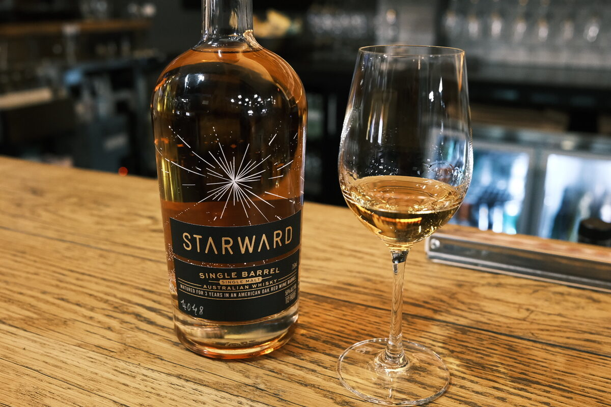

Starward "Single Barrel 4048" 3 years 56% (Barossa barrique)
Another Starward single cask.
Colour Gold.
Nose Chamomile! Chamomile infused grappa? Less wine and fruit-forward than is typical. But, berry jams, lemon curd, oranges… blueberry Danish. Vanilla, oak and oak spices, brown sugar… a waft of tropical fruit: banana, pineapple.
Palate Lemon acidity, orange juice. Apple and blackcurrant juice. Very juicy. Pineapple juice. Malt. Tannic… sweetened tea. Fruit roll ups are back.
Finish Spiced. Mulled wine. Long and warming. Fruit jams. Oak and tannins.
Comments More distillate forward than the other Starwards. That is, of course, relative… but this is an exemplar of the style. 86/100.

Posted by Dominic on 14 Jun 2021